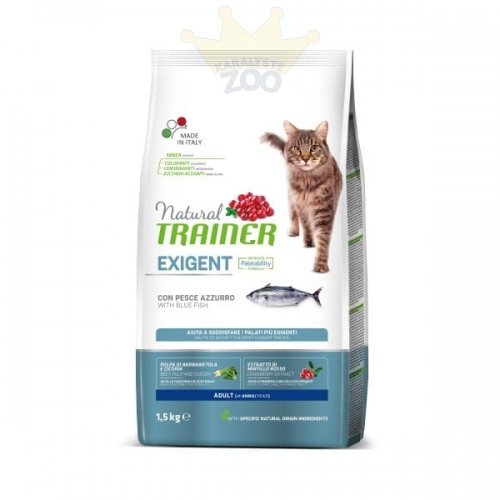

Welcome to gyvūnėlių parduotuvė
Jūsų augintinio parduotuvė FERA.LT
2020.10.29 11:04gyvūnėlių parduotuvė
Mano krepšelis 0 Prekė (-ės) 0Krepšelis yra tuščias
Peržiūrėti krepšelį Pirkti Welcome Mano paskyra Užsakymai Prekių palyginimas Pageidavimų sąrašas Prisijungti arba Registruotis Kontaktai info@fera.lt 8 677 62160 Meniu MeniuŠunims
Šunų maistas ir skanėstai
Sausas šunų maistas Šlapias šunų maistas Šunų veterinarinis maistas Begrūdis šunų maistas Šunų skanėstai Šunų pieno pakaitalai Rodyti daugiau →Dubenėliai šunims, maitinimas
Automatinės girdyklos ir šėryklos šunims Dubenėliai šunims Šunų maisto laikymas Dubenėlių padėkliukai šunims Buteliukai šunimsAntiparazitinės priemonės šunims
PincetaiŠunų higienos ir valymo priemonės
Šunų dėmių ir kvapų šalinimas Šunis atbaidančios priemonės Maišeliai šunų ekskrementams Šunų kailio šukosŠunų priežiūra ir grožis
Priemonės šunų maudymui Šepečiai ir šukos šunims Šunų ausų ir akių priežiūra Kosmetinės priemonės šunims Šunų kirpimo žirklės Šunų nagų priežiūra Rodyti daugiau →Šunų guoliai, dėžės ir narvai
Šunų guoliai Šunų nešiojimo krepšiai Šunų gabenimo narvai ir dėžės Šunų durų landos ir tvorelės Šunų antklodės Šunų kelionių įranga Rodyti daugiau →Šunų dresavimo priemonės
Mokomosios priemonės šunims Šunų aptvarai Šunų dresavimo antkakliai Šunų dresavimo antsnukiai Skanėstai šunų dresavimuiŠunų žaislai
Žaidimai šunims Kramtukai šunims Kamuoliukai šunims Interaktyvūs žaislai šunims Virviniai žaislai šunims Mėtymo žaislai šunims Rodyti daugiau →Šunų sveikata
Šunų dantims Šunų širdžiai Šunų inkstams ir skrandžiui Šunų akims ir ausims Šunų kaulams ir sąnariams Šunų odai ir kailiui Rodyti daugiau →Šunų pavadėliai, petnešos ir antsnukiai
Šunų antkakliai Šunų pavadėliai Šunų petnešos Šunų apynasriai Šunų antsnukiai Pakabukai šunims Rodyti daugiau →Šunų drabužiai ir aksesuarai
Šunų apsauginės kelnaitės Šunų drabužiai Šunų letenų apsaugaPopuliarūs prekės ženklai
Katėms
Kačių maistas ir skanėstai
Sausas kačių maistas Šlapias kačių maistas Kačių veterinarinė dieta Kačių skanėstai Kačių pieno pakaitalai Maistas veislinėms katėms Rodyti daugiau →Dubenėliai katėms, maitinimas
Automatinės girdyklos ir šėryklos katėms Dubenėliai katėms Kačių maisto laikymas Dubenėlių padėkliukai katėms Buteliukai katėmsAntiparazitinės priemonės katėms
Pincetai Šukos parazitams šalintiKačių higienos ir valymo priemonės
Kačių dėmių ir kvapų šalinimas Maišeliai kačių ekskrementams Kačių kailio šukosKačių tualetai ir kraikas
Kačių kraikas Kačių tualetai PriedaiKačių priežiūra ir grožis
Priemonės kačių maudymui Šepečiai ir šukos katėms Kačių ausų ir akių priežiūra Kačių kirpimo žirklės Kosmetinės priemonės katėms Kačių nagų priežiūraKačių guoliai, dėžės ir narvai
Kačių guoliai Kačių gabenimo narvai ir dėžės Kačių antklodės Kačių durų landos Kačių kelionių įrangaKačių mokymo priemonės
Mokomosios priemonės katėms Knygos apie kates Baldų apsauga DVD apie katesKačių žaislai ir draskyklės
Pliušiniai žaislai katėms Kamuoliukai katėms Interaktyvūs žaislai katėms Žaislai ant pagaliuko katėms Draskyklės katėms Tuneliai katėmsKačių pavadėliai, petnešos ir antkakliai
Kačių antkakliai Kačių petnešos Pakabukai katėms Kačių pavadėliaiKačių sveikata
Kačių dantims Kačių širdžiai Kačių inkstams ir skrandžiui Kačių akims ir ausims Kačių kaulams ir sąnariams Kačių odai ir kailiui Rodyti daugiau →Populiarūs prekės ženklai
Graužikams
Maistas ir skanėstai
Žiurkėnų maistas Šeškų maistas Degu maistas Triušių maistas Pelių ir smiltpelių maistas Žiurkių maistas Rodyti daugiau →Dubenėliai ir girdyklos
Dubenėliai GirdyklosSveikata
Vitaminai ir papildai Vanduo graužikamsNarveliai ir gardai
Narveliai Mokomosios priemonės Gardai ir aptvarai PriedaiHigienos ir valymo priemonės
Gruntai ir pakratai Dėmių ir kvapų šalinimas Kailio šukos Baldų apsaugaPriežiūra ir grožis
Smėlio maudyklės Šepečiai ir šukos Šampūnai ir kondicionieriai Nagų priežiūraŽaislai
Bėgimo rateliai ir rutuliai Nameliai ir landos Kramtalai Guoliai ir hamakai Tuneliai Žaidimų aikštelėsTransportavimo dėžės ir pavadėliai
Transportavimo dėžės Petnešos ir pavadėliaiPaukščiams
Paukščių maistas ir skanėstai
Mažų paukščių maistas Vidutinių ir didelių paukščių maistas Kanarėlių maistas Egzotinių paukščių maistas Laukinių paukščių maistasPaukščių lesyklėlės ir girdyklos
Paukščių girdyklos Paukščių lesyklėlės Paukščių maisto dubenėliaiPaukščių sveikata ir grožis
Paukščių odos ir plunksnų priežiūra Vitaminai ir papildai paukščiams Paukščių snapo ir nagų priežiūraPaukščių smėlis ir kraikas
Paukščių smėlisPaukščių narveliai ir priedai
Paukščių narveliai Paukščių nameliai ir lizdai Paukščių sūpynės Medžiagos paukščių lizdams Paukščių kopetėlės ir laktos PriedaiPaukščių žaislai ir veidrodėliai
Paukščių žaislai Paukščių veidrodėliai Paukščių žaidimų aikštelėsLaukiniai paukščiai
Laukininių paukščių maistas Laukinių paukščių šėryklos ir nameliaiŽuvims
Akvariumai ir priedai
Akvariumai Akvariumų priedai Neršykla akvariumuiŽuvų maistas ir priežiūra
Žuvų maistas Vandens kondicionieriai akvariumams Preparatai jūriniams akvariumams Vandens testai Tinkleliai Augalų apsauga Rodyti daugiau →Filtrai ir oro kompresoriai
Akvariumų filtrai Akvariumų filtrų užpildai Akvariumų siurbliai (pompos) Akvariumų dalys ir priedaiApšvietimas ir šildymas
Akvariumų UV sterilizatoriai Akvariumų termometrai Akvariumų apšvietimas Akvariumų šildytuvaiAkvariumų augalai ir dekoracijos
Akvariumų augalai Akvariumų dekoracijos Šaknys akvariumams Akvariumų fonai Akvariumų gruntas ir substrataiTvenkiniai
Apšvietimas Filtrai Tvenkinio žuvų maistas Vandens testai Priemonės tvenkiniams nuo dumblių Valymas Rodyti daugiau →Egzotiniams
Maistas ir skanėstai
Vėžlių maistas Chameleonų maistas Driežų maistasMaitinimo priedai
Šėryklos ir pincetaiSveikata ir grožis
Papildai ir vitaminaiTerariumai ir įranga
Terariumų fonai Terariumų filtrai Terariumų priedaiGruntas ir priedai
GruntasTerariumų valymas ir priežiūra
Valymas Temperatūros palaikymas Drėgmės palaikymasTerariumų šildymas ir apšvietimas
Šildytuvai Lempos ApšvietimasTerariumų dekoracijos
Dekoracijos Medinės dekoracijos Slėptuvės ir namukaiNamai
Plovikliai ir kaukės
Šiukšliadėžės ir krepšiai
Įrankių dėžės
Kitos prekės namams
Apsauga nuo uodų
Apsauga nuo parazitų
Sodo reikmenys
30 DIENŲ PINIGŲ GRĄŽINIMO GARANTIJA! NEMOKAMAS PRISTATYMAS UŽSAKYMAMS NUO 14 EURSpecialūs pasiūlymai
FERA.LT: gyvūnėlių maisto ir aksesuarų elektroninė parduotuvė
Mūsų parduotuvėje rasite virš 13 000 produktų, kurie patenkins visus Jūsų augintinio poreikius – šuns, katės, žuvytės, žiurkėno, jūrų kiaulytės, triušio, vėžlio ar kanarėlės.
Royal Canin - tai populiarus ėdalas bet kokio amžiaus šunims ir katėms, sukurtas atsižvelgiant į veislę bei kiekvieno augintinio gyvenimo stilių. Speciali veterinarinio ėdalo linija padeda gyvunėliams greičiau pasveikti.
Bosch ir Bosch Sanabelle - Vokietijoje pagamintas aukščiausios kokybės maistas su kruopščiai atrinktais ingredientais, kurie atitiks šunų ir kačių lūkesčius nepriklausomai nuo jų amžiaus, lyties ir individualių poreikių,
Brit - aukščiausios kokybės pilnavertis Premium ir Super Premium klasės maistas šunims ir katėms, pritaikytas pagal augintinių amžiaus ir svorio reikalavimus. Su skaniais mėsos gabalais, be javų.
Purina - maistas sukurtas bendradarbiaujant su mitybos specialistais, veterinarais ir elgesio specialistais. Maistingas, subalansuotas ir skanus maistas padedantis palaikyti šunų ir kačių sveikatą ir gerovę.
Pedigree - populiarus maistas ir skanėstai visų amžiaus grupių šunims su subalansuota sudėtimi, kuri padeda palaikyti pagrindines šunų sveikato sritis.
Josera - aukščiausios kokybės maisto produktai šunims ir katėms. Pagaminti iš kruopščiai atrinktų ingredientų be kviečių, sojos, cukraus ir genetikai modifikuotų žaliavų, kurie padeda užtikrinti aukščiausią kokybę bei puikų virškinimą.
Šunims
Guoliai šunims – geriausias guolių, patiesimų, pagalvių bei gultų pasirinkimas šunims, praktiški plastikiniai guoliai bei originalaus dizaino olandiškos pagalvės.
Kelioninai reikmenys – krepšiai ir rankinės reikalingos pervežant gyvūną bei vizitų pas veterinarą metu, krepšiai su IATA sertifikatu.
Antkakliai ir pavadėliai šunims – platus petnešų, antkaklių ir tradicinių bei automatiškų pavadėlių pasirinkimas visų dydžių bei veislių šunims.
Mašinėlės šunų kirpimui – išsirink geriausias kirpimo mašinėles ir kitas šunų priežiūros priemones.
Žaisliukai šunims – kamuoliukai, kramtukai, minkšti žaisliukai bei žaidimai šunims pramogai bei fiziniam aktyvumui lavinti.
Katėms
Guoliai katėms – didžiausias guolių, patiesimų, pagalvių bei gultų pasirinkimas, patogūs guoliai kabinami ant radiatorių.
Draskyklės katėms – būtini priedai katės žaidimams. Jų dėka apsaugosite savo baldus nuo natūralaus noro draskyti.
Žaislai katėms – tuneliai, meškeres, kamuoliukai, minkšti bei interaktyvūs žaisliukai, žaisliukai su katžole.
Kraikai katėms – bentonitinis, silikoninis, antibakterinis arba medinis – užtikrins tualeto higieną bei švarą, o taip pat pašalins ir blogus kvapus.
Tualetai katėms – atviri, uždaromi bei su sieteliu, su anglies filtru, sugeriančiu blogus kvapus, ivairių spalvų bei modelių.
Durelės katėms – grotelės, apsauginiai tinkleliai, durelės ir tuneliai užtikrins katei saugumą bei judėjimo laisvę.
Šunų ir kačių aukščiausios kokybės sausas ir šlapias maistas, taip pat ir speciali veislinių gyvūnų maisto linija. Veterinarinis maistas.
peržiūrėti prekes »
Sausas ir šlapias maistas bei skanėstai šunims padedantys palaikyti sveikus dantis, imunitetą, virškinimą, blizgų kailį ir sveikus kaulus.
peržiūrėti prekes »
Sausas maistas skirtas katėms, pritaikytas pagal Jūsų augintinio amžių, veislę ir jo poreikius, palaiko sveikatą ir ilgą gyvenimo trukmę.
peržiūrėti prekes »
Aukštos kokybės ir puikaus dizaino aksesurai šunims, katėms, graužikams, paukščiams, ropliams ir žuvytėms.
peržiūrėti prekes »
Ekologiškas kraikas katėms ir graužikams. Puikiai sugeria drėgmę ir kvapus. Biologiškai skaidomas.
peržiūrėti prekes »
Akvariumų įranga ir priedai skirti jūrinių ir gėlavandenių akvariumų priežiūrai.
peržiūrėti prekes »
PRIEŠ APSIPERKANT
Prekių pristatymas Užsakymų įvykdymo laikas Prekių prieinamumas Registracija el. parduotuvėje Prekių pirkimo – pardavimo taisyklės Privatumo politika Perskaitykite mūsų straipsnius - BLOGASUŽSAKYMAS
Prisijungimas prie paskyros Užsakymo pakeitimas Užsakymo pateikimas Užsakymo patvirtinimasPO APSIPIRKIMO
Garantija ir aptarnavimas PVM sąskaitos faktūros Skundai ir prekių grąžinimasSUSIPAŽINKIME
Apie mus Kontaktai© 2015-2020 FERA.LT.
Fera International: Facebook Fera